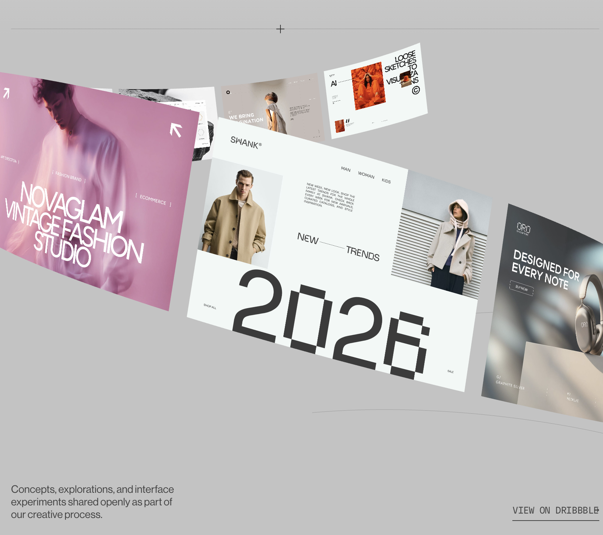
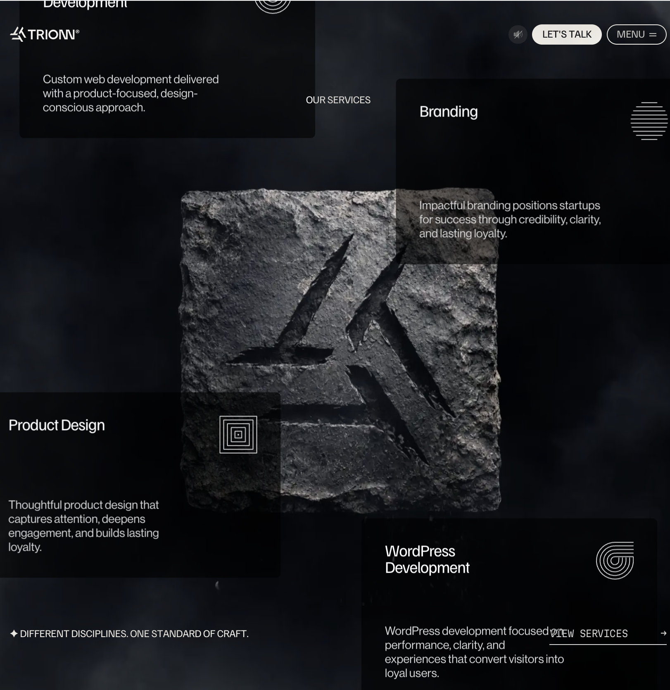
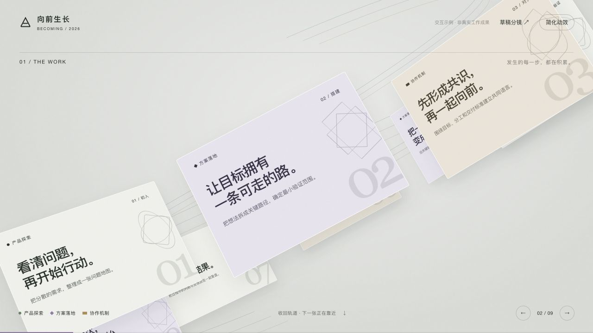
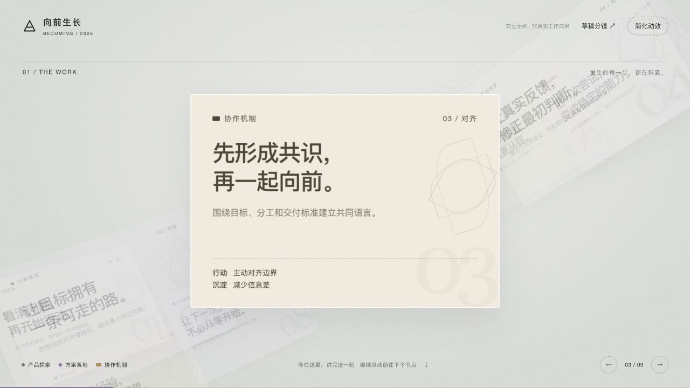
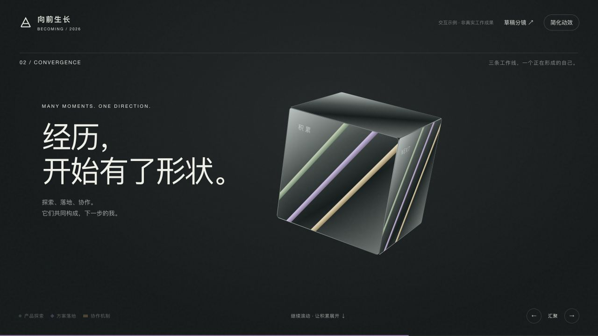
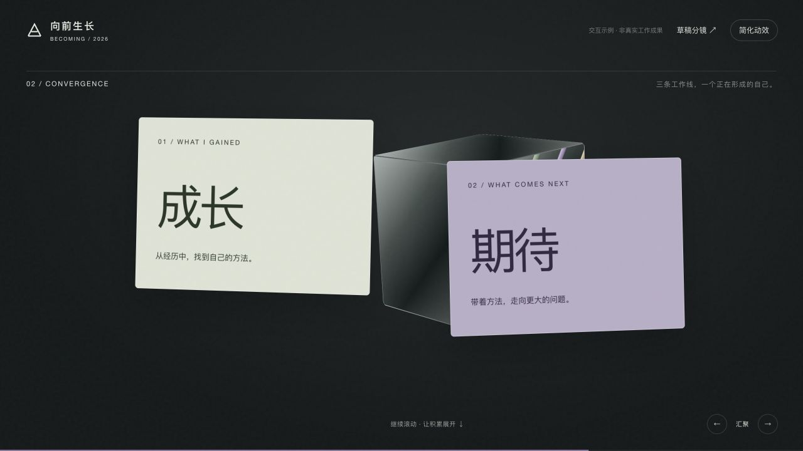
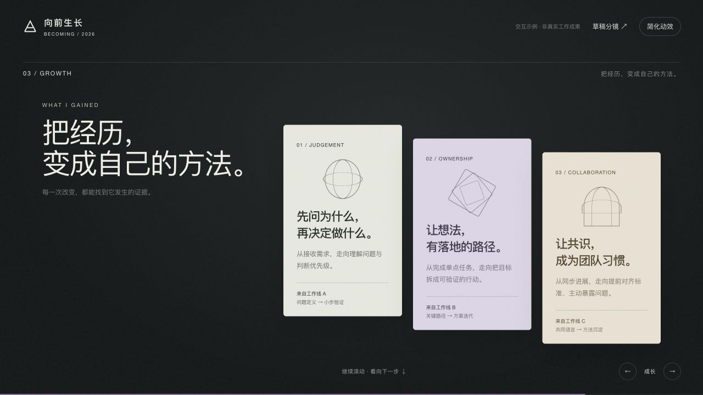
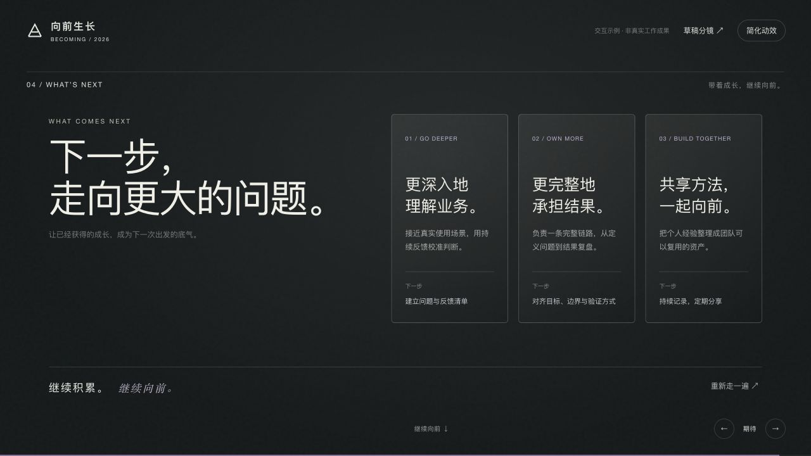

根据你选定的两张截图重做。主角始终是卡片，3D 物体在收束时出现。
连续滚动，无周次 tab。三条工作线通过颜色与角标区分。滚动停止，画面就停留；讲完再继续。

借鉴前大后小、卡片绕行、延伸出视野的感觉。新增居中转正、放大阅读的区间。

最后一张讲完，卡片收拢到一个核心。核心的两个面展开，成为“成长”与“期待”。
下面为本次网站 demo 的实际画面；转场由滚动控制，可随时停下或回看。

整条螺旋斜向穿过画面，卡片随轨道倾斜，在前后景之间流动。正在讲的节点逐渐靠近，其他节点仍留在同一空间。

背景退暗，让日期、行动、沉淀清晰可读。阅读区间内卡片保持稳定，无自动倒计时。


这是为本次答辩新增的转场设计。Trionn 提供的是空间与物体的视觉参考，并没有原样提供这套叙事。

三张成长卡片：判断、推进、协作。每张卡片下方关联前面工作线中的证据，讲清“为什么有这个成长”。

镜头转向下一组目标卡片。分别讲期待承担什么、下一步如何行动，让过去自然引出未来。
绿色圆点 / 产品探索 紫色菱形 / 方案落地 暖色条形 / 协作机制。节点按发生顺序交错出现，具体日期与内容可以替换。
向下滚动推进，停止滚动保持；点击可见卡片让它进入阅读位。左右箭头直接到上一个或下一个节点，页面末尾可以重新播放。